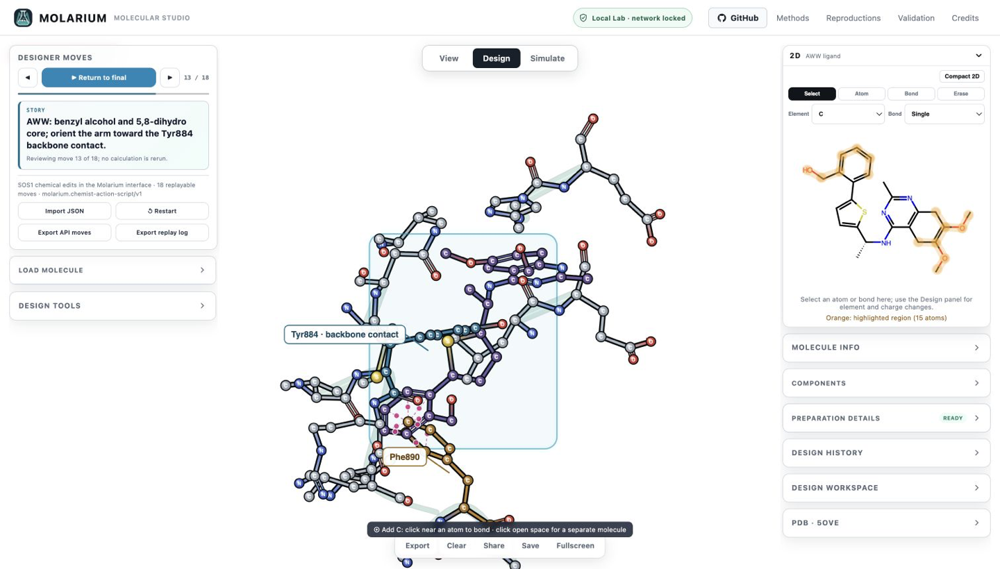
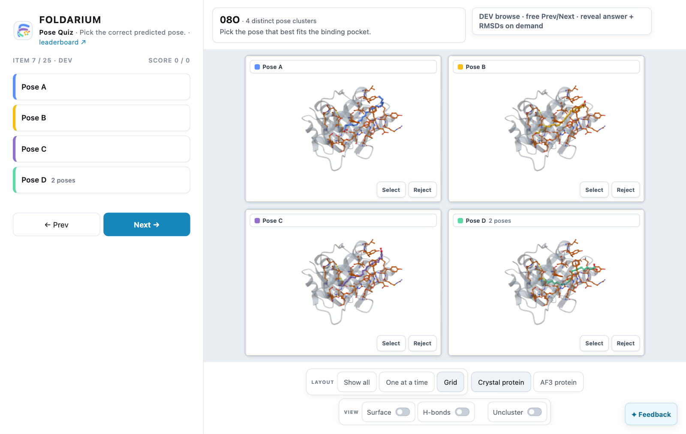

Projects
SAR Brain 
SAR Brain is an attempt to capture the full medicinal chemistry decision-making process in a single reinforcement learning environment, reconstructed from published SAR and synthetic routes. Unlike conventional molecular optimization benchmarks, it models how each decision changes the future of a discovery campaign: new assay data enables further modeling calculations, while synthesis creates intermediates that change which compounds can be made and at what cost. Agents optimize the entire design–make–test–model process, rather than individual molecular properties.

Molarium
Molarium is an experiment in agent-generated scientific software: an open-source molecular design and simulation workbench built with a coding agent. It runs directly in the browser, combining molecular editing, protein–ligand design, conformational sampling, and molecular simulations using WebAssembly and WebGPU. A shared molecular state, numerical validation, and replayable design histories allow scientists and agents to develop and adapt computational workflows without sacrificing scientific reproducibility.

Foldarium Beta testing
Foldarium explores how chemists evaluate protein–ligand binding poses generated by cofolding models. It allows experts to compare predicted poses across compound libraries, record their preferences, and identify plausible binding modes that model confidence scores may fail to distinguish. These decisions provide data for benchmarking pose predictions and learning the structural intuition behind expert pose selection.
